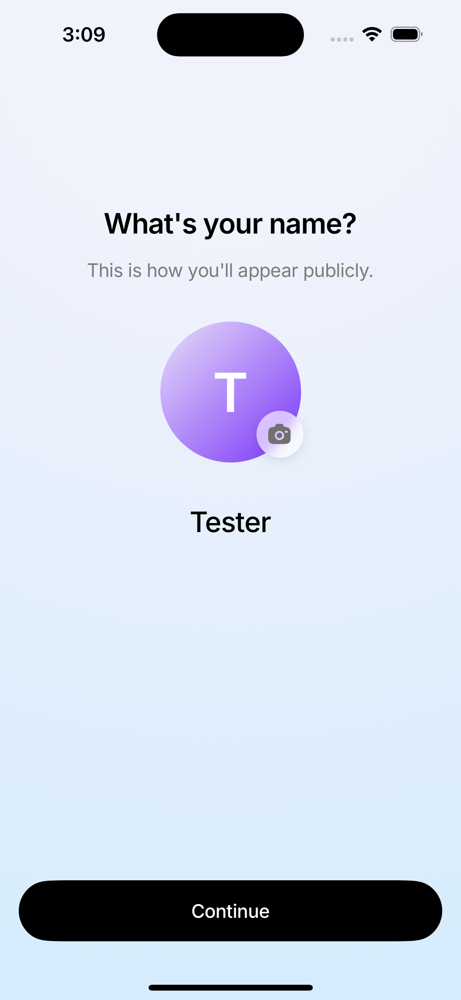
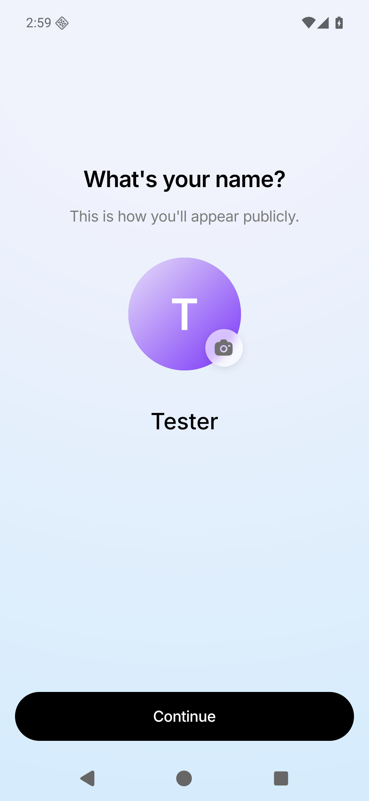

Original simulator captures, same synthetic avatar. Close material match; OS bars and text rendering differ. No screenshot pixels were edited.
The Android blur previously captured the camera itself, adding a dark blurred copy underneath. It now blurs only the avatar and page; iOS remains unchanged.
Sampled photo backdrop: mean channel difference 1.44/255. Both camera fills are #707070. Physical-device and release checks remain pending.

